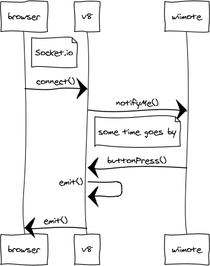

Controlling Node.js with a wiimote
My experiences with developing multi-threaded nodejs addon
Andrew Brampton
November 13th, 2012
Andrew Brampton
November 13th, 2012



var wii = require('../../nodewii')
, express = require('express')
, app = express()
, http = require('http')
, server = http.createServer(app)
, io = require('socket.io').listen(server);
var wiimote = new wii.WiiMote();
wiimote.connect( '00:00:00:00:00:00', function( err ) {
console.log('connected');
wiimote.on( 'button', function( data ) {
io.sockets.emit('button', data);
});
});
<script src="/socket.io/socket.io.js"></script>
var socket = io.connect();
socket.on( 'button', function( data ) {
console.log('button was pressed ' + data);
});